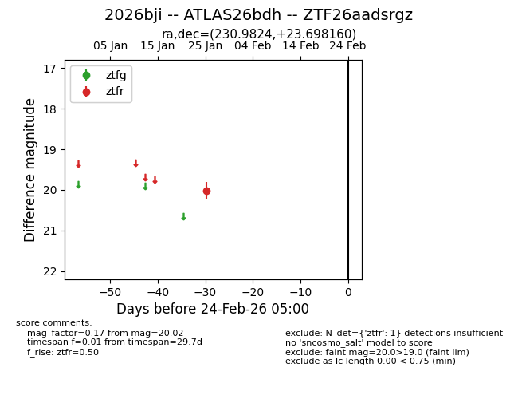
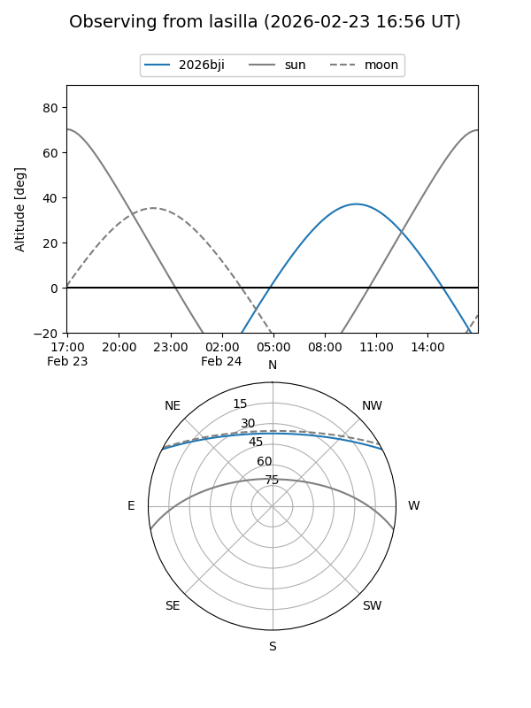
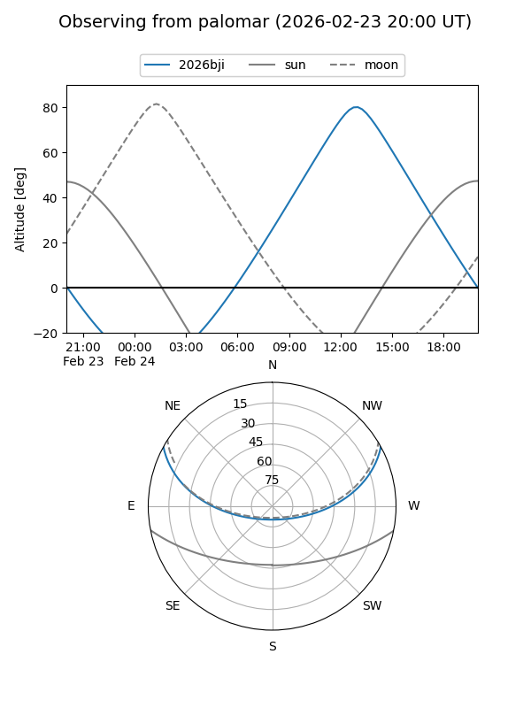

2026bji
Target 2026bji at 2026-01-27 11:36
Aliases and brokers:
FINK: link
Lasair: link
ALeRCE: link
TNS: link
YSE: link
alt names
ZTF26aadsrgz (ztf,fink_ztf)
2026bji (tns,yse)
ATLAS26bdh (atlas)
Coordinates:
equatorial (ra, dec) = 230.9824,+23.69816
equatorial (HMS+DMS) = 15:23:55.77,+23:41:53.38
galactic (l, b) = (35.8923,+55.52491)
Flags:
Photometry:
last ztfr=20.02
1 ztfr detections
Lightcurve

Visibility


Additional plots